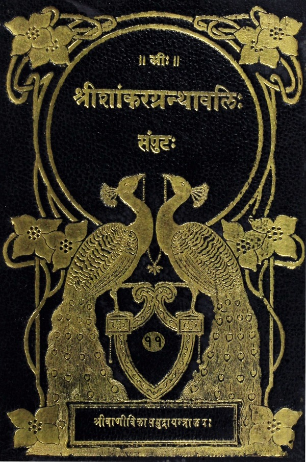

श्रीशांकरग्रन्थावलिः
संपुटः १ - २०
Home
About
Concluding Note
T. K. Balasubramaniam
Superhuman efforts of a savant
Prema Nandakumar
Views on the Sri Vani Vilas Press
His (Sri TKB’s) aim
Volumes
१. कर्मसंन्यासात्मकसाधनप्रधानात्वंपदार्थप्रधाना च आद्यापडद्यायि |
प्रथमोऽध्यायः |
युद्धविषये संजयं प्रति धृतराष्ट्रस्य प्रश्नः
धृतराष्ट्रेण पृष्टस्य संजयस्योत्तरारम्भः
दुर्योधनस्य द्रोणाचार्यं प्रति युद्धसाहायकप्रार्थना
दुर्योधनहर्षार्थं भीष्मादिभिः शङ्खपूरणम्
स्वसैन्यप्रोत्साहनकृते कृष्णार्जुनादिभिः शङ्खवादनम्
पाण्डवकृतशङ्खवादनेन धार्तराष्ट्राणां हृदयविदारणम्
युद्धार्थं व्यवस्थितान्धार्तराष्ट्रानन्यांश्च योद्धृन्निर्वर्णयितुं श्रीकृष्णं प्रत्यर्जुनस्योभयोः सेनयोर्मध्ये रथस्थापनप्रार्थना
भगवता सेनाद्वयमध्ये रथस्थापनपूर्वकमर्जुनाय दर्शिताः समवेता योद्धार इति निरूपणम्
युद्धभूमावुभयोरपि सेनयोः स्थितान्बन्धूनवलोक्यार्जुनस्य विषादः
श्रीकृष्णं प्रत्यर्जुनस्य विषादप्रदर्शिकोक्तिसरणिः
शोकाकुलस्यार्जुनस्य शरचापौ परित्यज्य रथोपस्थोपवेशः
द्वितीयोऽध्यायः |
संजयवचनम्
विषीदन्तं पार्थं युद्धे प्रविवर्तयिषोर्भगवतस्तद्विषादनिबर्हणोक्तिः
गुर्वादिभिः सार्धं योद्धुमयुक्तमित्युक्तिपूर्वकमर्जुनस्य युद्धकरणाकरणयोः कतरच्छ्रेय इति जिज्ञासोः श्रीकृष्णं प्रति शिष्यत्वेनोपसत्तिः
संजयवचनम्
अर्जुनस्य शोकमोहावपनेतुं भगवत्कृतः संसारनिवर्तक आत्मतत्त्वविनिर्णयप्रकारः
क्षत्रियधर्मत्वाद्युद्धस्यावश्यतत्कर्तव्यत्वोक्तिः
युद्धस्य स्वर्गसाधनत्वकथनम्
स्वधर्मभूतयुद्धाकरणे स्वधर्मकीर्तिहान्या पातककथनम्
संभावितस्य मृतिर्वरीयस्यकीर्तिस्तु दुःसहेति प्रदर्शनम्
युद्धाद्भीतो निवृत्त इत्यादिनिन्दावचनं शृण्वतो दुःखं महद्धि स्यादिति कथनम्
अधिसमरं शरीरहतौ स्वर्गप्राप्तिररिविजये वा महीप्रातिरिति पश्यन्युद्धकरण एव मतिं कुर्वित्युक्तिः
जयाजययोः समत्वदृष्ट्या युद्धं कुर्वतो दोषाभावकथनम्
आत्मतत्त्वसाक्षात्कारहेतोर्निष्कामकर्मानुष्ठानस्य समाधियोगस्य च निरूपणम्
पार्थकृतः स्थितप्रज्ञलक्षणप्रश्नः
स्थितप्रज्ञलक्षणकथनम्
विषयविमुखानामपीन्द्रियाणां तत्तद्विषयरागानुवृत्तौ प्रज्ञालाभः कथं स्यादित्याशङ्कायामुत्तरम्
विपश्चितोऽपि यतमानस्य प्रसभमिन्द्रियाणि मनोहरन्तीत्युक्तिः
संयतेन्द्रियस्य युक्तस्य प्रज्ञा स्थिरीभवतीति कथनम्
विषयान्ध्यायतः सङ्गादिद्वारा पुंसः प्रणाशकथनम्
मोक्षहेतूपन्यासः
अशान्तस्यासुखित्वकथनम्
अविजितेन्द्रियाणां मनसा प्रज्ञापहार इत्यत्र दृष्टान्तप्रदर्शनम्
विजितेन्द्रियस्य प्रज्ञ स्थिरा भवतीति कथनम्
परमार्थसत्यां सर्वभूतनिशायां संयमी जागर्तीत्युक्तिः
यतेरेव स्थितप्रज्ञस्य विदुषस्त्यक्तैषणस्य मोक्षावाप्तिर्नत्वयतेरित्यत्र दृष्टान्तप्रदर्शनम्
निवृत्तसर्वकामस्यैव पुंसः शान्तिप्राप्तिरिति कथनम्
ज्ञाननिष्ठायाः स्तुतिः
तृतीयोऽध्यायः |
ज्यायसी चेत्कर्मणस्त इत्यादिरर्जुनस्य प्रश्नः
कर्मयोगज्ञानयोगयोर्भिन्नाधिकारिकत्वकथनम्
अनात्मज्ञस्य कर्मयोगावश्यकत्वनिरूपणम्
आत्मज्ञस्य कर्मयोगानावश्यकत्वप्रतिपादनम्
सर्वथा फलानुषङ्गार्दजुनीनर्वतनपूर्वकं स्वधर्मे तत्प्रवर्तनम्
अर्जुनकृतः पापाचरणप्रवृत्तिहेतुप्रश्नः
सर्वानर्थहेतोः कामस्य वैरित्वं प्रतिपाद्येन्द्रियजयादिना तन्नाशस्य निरूपणम्
चतुर्थोऽध्यायः |
यथोक्तस्य ज्ञानयोगस्य कृत्रिमत्वशङ्कापनुत्तये वंश कथनेन स्तुतिः
लेकस्य भगवान्नेश्वर इवेति शङ्कां निवर्तयितुमिच्छतोऽर्जुनस्य प्रश्नः
अतीतानेकजन्मवत्त्वं सर्वप्राणिसाधारणत्वेन प्रदर्श्यात्मनस्तु तज्ज्ञानसत्त्वरूपविशेषप्रदर्शनम्
भगवत आत्मजन्मप्रकारप्रयोजनानुकथनम्
भगवत्कर्तृकं स्वदिव्यजन्मकर्मवेदनेन प्राणिनां पुनर्जन्माभावस्य कथनम्
पूर्वेषामपि ब्रह्मविदामेतेनैव मोक्षमार्गेण कैवल्यप्राप्तिरिति कथनम्
तत्तत्कामनानुरोधेनात्मनस्तत्तत्फलदातृत्वकथनम्
कर्मजायाः सिद्धेः शीघ्रभावितया सर्वेषां कर्मप्रवृत्तिकथनम्
चातुर्वर्ण्यसृष्टिकर्तुरपि भगवतो वस्तुतः स्वस्य तदकर्तृत्वबोधनम्
स्वस्याकर्तृत्वज्ञानेनापि पुंसः कर्मबन्धाभाव इति भगवत उक्तिः
स्वात्मानमकर्तारं कर्मफलनिःस्पृहं च ज्ञात्वा कर्म कुर्विति पार्थं प्रति नियोगः
कर्माकर्मकथनप्रतिज्ञानम्
कर्मणो दुर्विज्ञेयत्वोक्तिः
कर्मादीनां तत्त्वप्रदर्शनम्
कर्माकर्मणोरकर्मकर्मदर्शनस्तुतिः
उक्तज्ञानस्य यज्ञत्वसंपादनम्
दैवयज्ञादिकथनपूर्वकं ज्ञानयज्ञस्य सर्वयज्ञेभ्यः श्रेष्ठत्वप्रतिपादनम्
गुरुप्रणिपातादिना यथोक्तज्ञानस्य प्राप्तिकथनम्
ज्ञानमहत्त्वकथनम्
ज्ञानप्राप्तिं प्रत्युपायं प्रदर्श्य ज्ञानहेतौ कर्मयोगेऽर्जुनप्रवर्तनम्
पञ्चमोऽध्यायः |
ज्ञानरहितसंन्यासकर्मयोगयोः कः प्रशस्यतर इत्यर्जुनस्य प्रश्नः
यथोक्तसंन्यासात्कर्मयोगस्य सहेतुकं प्रशस्यतरत्वकथनम्
ज्ञानसहितसंन्यासकर्मयोगलक्षणयोः सांख्ययोगयोः फलैकत्वोक्तिः
पारमार्थिकः संन्यासः कर्मयोगमन्तरा दुःखैकफलक इति कथनम्
लोकसंग्रहाय केवलं कर्म कुर्वतोऽपि सम्यग्दर्शननिष्ठस्य न तत्फलविलेप इत्युपपादनम्
योगिनस्तत्फलाविलेपे हेतुद्वयकथनम्
विदुषः सुखेन देहावस्थितिकथनम्
आत्मनः प्रभोः कारयितृत्वाद्याभावकथनपुरःसरं स्वभावस्य कारयितृत्वादिप्रतिपादनम्
ज्ञानिनां ज्ञानेन ब्रह्मप्राप्तिकथनम्
ज्ञानिनो ब्राह्मणादौ सर्वत्र समदर्शित्ववर्णनम्
समदर्शित्वेऽपि ज्ञानिनां दोषाभावप्रतिपादनम्
ब्रह्मनिष्ठस्य प्रियाप्रियसंनिधावपि हर्षोद्वेगराहित्यकथनम्
ब्रह्मनिष्ठस्य विषयेष्वसक्तस्याक्षयसुखावाप्तिकथनम्
इन्द्रियाणां विषयसकाशान्निवर्तने हेतूपन्यासः
प्रागेव देहत्यागात्कामक्रोधोद्भवं वेगं निगृङ्खत एव युक्तत्वसुखित्वयोः कथनम्
अन्तः सुखादिविशिष्टस्य ब्रह्मप्राप्तिकथनम्
ध्यानयोगस्य संक्षेपत उपक्षेपः
षष्ठोऽध्यायः |
निष्कामकर्मयोगस्य सत्त्वशुद्धिद्वारा ध्यानयोगप्राप्त्युपायत्वात्स्तुतिः
ध्यानयोगेऽवस्थातुमशक्तस्य निष्कामकर्मयोगः, शक्तस्य तु सर्वकर्मसंन्यास इति प्रतिपादनम्
ध्यानयोगारूढस्य लक्षणकथनम्
विस्तरत आसनाहारविहारादिनियमकथनसहितं सफलध्यानयोगनिरूपणम्
यथोक्तध्यानयोगस्य मनश्चाञ्चल्येन दुष्करत्वप्रतिपादकः प्रश्नः
अभ्यासवैराग्याभ्यां मनोनिग्रहे सति ध्यानयोगसिद्धिरित्युक्तिः
असंयतात्मना ध्यानयोगस्य दुष्प्रापत्वकथनम्
ध्यानयोगप्रवृत्तस्य त्यक्तसर्वकर्मणः प्रागेव सम्यग्दर्शनलक्षणफलप्राप्तेर्देहवियोगे का गतिरित्यर्जुनप्रश्नः
योगभ्रष्टस्य विनाशाभावप्रतिपादनपुरःसरमुत्तमगतिप्राप्तिकथनम्
ध्यानयोगिनः सर्वश्रेष्ठत्वकथनपूर्वकं ध्यानयोगेऽर्जुनस्य प्रवर्तनम्
रुद्रादित्यादिध्यानपराणां मध्ये वासुदेवध्याननिष्ठस्य युक्ततमत्वबोधनम्
२. उपास्यनिष्ठा तत्पदार्थनिष्ठा वा मध्यमा षडध्यायी |
सप्तमोऽध्यायः |
भगवद्ध्यानयोगनिष्ठस्य विभूत्यादिसमस्तगुणसंपन्नभगवज्ज्ञानप्राप्त्युपदेशप्रतिज्ञा
ज्ञानदुर्लभत्वप्रदर्शनम्
अपरप्रकृतेर्भूम्याद्यष्टभेदभिन्नत्वोक्तिः
जीवभूतपरप्रकृतिकथनम्
यथोक्तप्रकृतिद्वयद्वारेश्वरस्य जगत्कारणत्वनिरूपणम्
सर्वभूतानां परमेश्वरे प्रोतत्वकथनम्
संक्षेपतो रसादिविभूतिप्रकथनम्
सात्त्विकादित्रिविधभावमोहितत्वाल्लोकानां भगवत्तत्त्वानभिज्ञात्ववर्णनम्
भगवदेकशरणस्य तत्त्वज्ञानेन मायातिक्रमकथनम्
दुष्कृतिनां भगवद्भक्तिपराङ्मुखत्वनिवेदनम्
भगवद्भजनप्रवृत्तानां सुकृतिनां भक्तानां चातुर्विध्यनिर्देशः
यथाविधेषु भक्तेषु ज्ञानिनः श्रेष्ठत्वप्रतिपादनम्
अपहृतविवेकविज्ञानताय देवतान्तरभजननिमित्तत्वोक्तिः
देवतान्तरोपासकानां तत्तदुपासनश्रद्धादार्ढ्यापादनेन भगवत एव तत्तत्स्वरूपेणेष्टप्रदातृत्वकथनम्
अन्यदेवतोपासकानामवाप्तफलस्यान्तवत्त्वप्रदर्शनम्
परमार्थतत्त्वस्य ज्ञाने हेतुनिरूपणम्
भगवद्भजनद्वारा सुकृतिनामुत्तमगतिप्राप्तिकथनम्
अष्टमोऽध्यायः |
किं तद्ब्रह्मेत्यादिप्रश्नसप्तकम्
यथोक्तस्य प्रश्नसप्तकस्योत्तरम्
अन्त्यभावनानुरोधेन देहान्तरावाप्तिकथनम्
सर्वदा भगवद्ध्यानपुरःसरमर्जुनस्य युद्धादिकरणे प्रवर्तनम्
अभ्यासयोगयुक्तस्य पुरुषोत्तमप्राप्तिकथनम्
प्रणवोपासनप्रकारः
ईश्वरं प्राप्तवतामपुनरावृत्तिकथनम्
स्वर्गलोकादिसत्यलोकान्तगतानां पुनरावृत्तिकथनम्
परतत्त्वस्वरूपप्रदर्शनम्
परमपुरुषस्य भक्तिप्राप्यत्वकथनम्
ध्यानयोगिनां कर्मिणां च यथानुरूपं देवयानपितृयाणरूपमार्गद्वयकथनम्
यथोक्तमार्गद्वयगतानामनावृत्त्यावृत्तिप्रदर्शनम्
मार्गद्वयचिन्तनप्रयोजनम्
योगमाहात्म्यम्
नवमोऽध्यायः |
परब्रह्मतत्त्वज्ञानोपदेशः
मूढकर्तृकस्वावज्ञायाः स्वतत्त्वाज्ञानमूलकत्ववर्णनम्
भक्तिलक्षणे मोक्षमार्गे महात्मनां प्रवृत्तिकथनम्
संक्षेपतो विभूतिवर्णनम्
सकामानां संसारपाप्तिकथनम्
निष्कामभक्तिनिष्ठानां सम्यग्दर्शिनां योगक्षेमस्य भगवन्निर्वहणोक्तिः
देवतान्तरेषु भक्तिमतामपि भगवद्भक्तत्वप्रतिपादनपुरःसरं तत्तद्भजनानुसारेण तेषां फलप्राप्तिकथनम्
भगवदाराधनस्य सुकरत्वप्रतिपादनम्
अर्जुनस्य भगवदाराधने प्रवर्तनम्
भक्तिमहिमकथनपूर्वकमर्जुनस्य तन्मार्गप्रवर्तनम्
ईश्वरभजनस्येतिकर्तव्यताप्रदर्शनम्

श्री भगवद्गीताभाष्यम्
(The Bhagavad Gita Bhashya)